Teaching practice
Preparation and planning
The context for my teaching practice
The learning module for my teaching practice is a project work in the voluntary course: Ohjelmointi Perusopetuksessa (Programming in Basic Education), at the Faculty of Education at the University of Oulu. The course is 5 ECTS (133.5 hours) and meant for teacher students who are interested in programming. The number of the students are 10-15 students. The main contents of the course include: 1) familiarising oneself with collaborative problem-solving in the context of programming, 2) familiarising oneself with the contents related to programming in the basic education curriculum, 3) practicing the basics of algorithmic thinking, 4) getting to know different programming tools and environments for beginners and 5) understanding the basics of automation with robotics tools. In the course, the students are required to do a 30 hours of project work, where I do my teaching practice.
As a teacher my role is designing and facilitating the students’ project work. The context of the project work is multifaceted. The goal of the project work is to design a programming activity for 9th grade students. In Finland, 9th grade students do a 5 days of internship at a workplace to get to know the working life, which is called “työelämään tutustuminen (TET)”. The “client” of the project is a telecommunication company in Oulu area. The company has had TET students every year but the activities for those students are not well developed. The company wants to develop the activities which reflect some of the jobs in the company, do not require significant amount of effort from the employees and are pedagogically sound. As the company’s main job fields include programming and engineering, this is a good context for the project work in this course and a perfect challenge for my teaching practice.
My guiding teacher is Dr. Jari Laru (Ph.D, M.Ed.) who works as a University Lecturer and Educational Technologist in a Faculty of Education, University of Oulu. He has had a lot of courses related to technology enhanced learning at the university. He is an experienced educational technologist and designer, and has been supporting learning and teaching with contemporary digital solutions for many years. He has been a chairman of the board of pedagogical use of ICT at the university of Oulu. He is the responsible person and the main teacher in Programming in Basic Education course.
Planning
I started planning the teaching practice by listing those things that had been already defined. 1) The clients' needs: the outcomes should be the activity for TET students that the company can offer with the minimum effort from the employees. 2) The activity setting: the length of a TET activity is 5 days and the students are 9th grade. 3) The tools: as programming tools for TET students, I decided to use BBC micro:bits and MakeCode editor. Micro:bits are used at schools and many students may be already familiar with the basics. MakeCode is easy to program micro:bits and it has functions to convert visual and text programming so that the students have opportunity to try text programming. With those settings in mind, I developed my plan for the teaching practice.
The regulations at the university
I reviewed the regulations of the university of Oulu. I especially paid attention to the following sections.
Teaching: an instructor should choose the contents and methods of teaching in cooperation with a responsible person of the course.
I set up several meetings with my guiding teacher, who is responsible of the course and we discussed and planned how the project work should be implemented (see below).
Language: a student at the university of Oulu has a right to use Finnish.
This course’s language of instruction is Finnish. However due to my limited Finnish skill, I need to use English as the primary language of instruction for the facilitation of the project work. I will make sure for the students that they have options to use Finnish instead of English (e.g., writing in the tasks, speaking in the discussion).
Intellectual property rights
In addition to the regulations of the university, I attended a voluntary course about intellectual property (IP) rights offered by the university of Oulu. Because the context of my teaching practice is the project where the students develop the activity for the company, I should have the understanding of how to deal with the IP rights of the students work. From this voluntary course about IP rights, I learned that what a student (excluding the case that the student is in the employment relationship with the university) produced in a course at the university belongs to the student. I learned different types of IP rights, such as copy rights and creative commons. Those are things that I should be aware of when planning the project work and discussing the outcomes from the project.
Discussion with my guiding teacher
I had initial discussion with the guiding teacher. He told me the students’ background and explained what the students have learned in the course. The students have been introduced to different programming tools and environments and tried them. They were also introduced to what are expected regarding to programming in basic education, such as programming related skills. The guiding teacher told me that despite the demanding level of the course, the students are motivated and interested in programming. The grading system of the course is pass/fail. Although I will not be involved in grading the students, I will design and give the assessment tasks for the project work.
We agreed that I will set 8 meet-up sessions during 2 months where I facilitate the process of the project work and give support if needed. Participation of the meet-up sessions is not mandatory but highly recommended to achieve the shared goal of the project. I roughly planned the contents of the 8 meet-up sessions: 1) kick-off meeting, 2-3) introduction to micro:bit programming, 4-7) developing the contents of TET activity 8) presentation. However, I will be flexible and adjust the contents based on the progress of the project.
He thinks that school teachers should know the ways of working outside school environment, such as explorative project work and collaboration with colleagues. He wish to make this project work ill-structured so that the teacher students can get the feeling of working in a company. He suggested to design the project as multiple layers of collaboration as follows. The students work as a team. Each team has different tasks (roles) to achieve the same goal. Thus the teams need to share information and progress, and collaborate with each other. I am the manager who facilitate the teams. It is just like we are working in a company and producing a product for a client.
Discussion with the "client" company
I had a meeting with the client company to present and get feedback on my teaching plan. Three employees who work in the company participated in the meeting. They were happy about my initial teaching plan including the expected goals, the expected contributions from the company and the time schedule. We also discussed the best ways to communicate and decided that if the students have questions to the company, I will collect the inquiry and ask to the company.
Learning environment for the teaching practice
As the main learning management platform, I use Microsoft Teams. The purpose of the Teams is to share information, make announcement, collaborate, share resources, and give assignments. The students have used Microsoft Teams for this course and they are used to it. Thus, I decided to use the same platform so that I won’t give extra challenges for the students to get used to a new platform. I use the specific channel in Teams created for the project work so that all the information and resources related to project work will be stored in one channel.
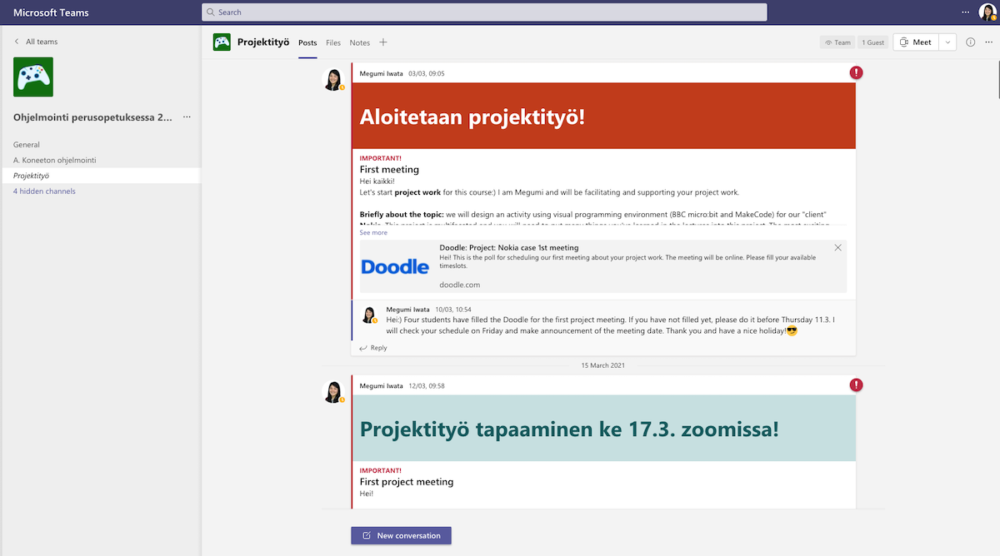I use Microsoft OneNote, which is integrated in Teams, for giving assignments. I chose OneNote because it can be used flexibly with text, images, drawings and videos for different types of assignments and it is easy to collaborate with others. It is integrated in Teams, so I can check the students' progress of the assignments easily by myself in real time.
I use email as a backup for communication with the students. I use chat function in Teams as the primary means for communication, but there are delays in Teams to deliver the notifications. To avoid miscommunication, I use email as a backup and send the students the email saying “Check Teams” when I make announcement in Teams.
This course is organised remotely. I use zoom for remote teaching. Although Teams have online meeting functions, there are some limitations, such as Mac users cannot share the sound and poll option is not available.
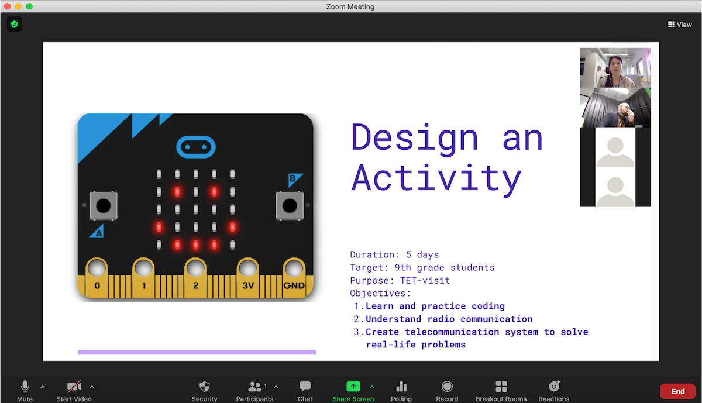I use Canva for making my slides for teaching. Canva has good templates with beautiful visual and allows user-friendly intuitive editing with auto positioning and many pre-defined shapes and figures. There are also collaborative functions, such as making comments on the document. In addition, there is a pointer in presentation mode which is easier for the students to follow. Canva offers free plan for educators, so it is good to introduce this tool for the teacher students.
Safety
For planning of my teaching practice, I considered safety of the students. I read the Universities Act (558/2009) as well as the regulations at the university of Oulu (See also my blog: Competence of laws and amendments). Considering physical safety of the students due to the current situation of the Covid-19, I had to organise my teaching practice completely following the Covid-19 guideline of the University of Oulu. The biggest practical issue of organising the teaching practice remotely is that the topic of my teaching practice require the physical devices such as microcontrollers and components. To give the students authentic experience, I consulted my guiding teacher and arranged to deliver the microcontroller to each student. In addition, I decided to utilise the simulator in the editors (MakeCode and TinkerCad Circuit). In the simulator, the students can try the program they make even without the physical devices.
Also, I paid attention to the students psychical and social safety in the planning of my remote teaching practice. I took it account that the students have not built the relationship with other students because they have not had a chance to meet face to face, and decided to organise my teaching so that it won’t require intensive collaboration with other students at least in the beginning of the project work. I wanted them to get to know each other first to feel safe and comfortable to discuss and collaborate with other students.
Teaching and guiding methods
The context of my teaching practice is project-based learning (PBL). PBL is a student-centred form of instructions which is based on the constructivist principles that the students learn while actively constructing their understanding by working with and using ideas, as well as the social interactions and the sharing of knowledge (Krajcik & Blumenfeld, 2006). PBL is organised in the context of a real life and meaningful problem-solving. In my case, the driving question of PBL is “How can the company organise effective TET activities for the 9th grade students?”. The students will work on the project to find a solution for this question. As collaboration among the students is essential in PBL, I use breakout room in zoom. As my guiding teacher suggested to have multiple layers of collaboration during the project work, I decided to divide the students into two teams: content team and pedagogy team, and let them work on the focus area of one project. The students need to work with the teammates as well as the other team to achieve the same project goal. I prepared several guiding questions to direct and support each team’s work.
Implementation
In this section, I write the summary of my teaching sesssions (session 01 - 08). I write what I prepared for the session, what I did in the session and how it went, as well as feedback from the guiding teacher and my self-reflection.
Meet-up session 01: Kickoff meeting
Date: 17.3.2021
Participants: 5 students, 3 employees of the client company, guiding teacher
Contents: introduction to the project, getting to know the members of the project
Learning objectives: get to know each other, make the students understand the project
Preparation
I decided to run the session following the slides I prepared. I sent my guiding teacher the slides beforehand. He advised me to reduce the contents of the slides and concentrate the most important things. I deleted a few slides which were too detailed for the first meeting.
Remarks from the session
I had some issues during my first teaching practice. One is technical issue. For the students and the clients zoom was not the familiar tool. Some of the participants had issues with audio and needed to leave the meeting and join again. I should have sent the instructions to set up zoom environment beforehand and reserved enough time for the technical matters in the beginning of the session. I should remember this always when I introduce a new tool.
Another issue was related to the interactions with the students. The students were much more quiet than I expected. I had planned short discussion with the students about the project to hear what they think and how well they understood the project. However, when I asked to the students, no one said anything. The students had their camera off so I couldn’t see their reactions. (If I were not recording this session, I would have suggested them to turn on the camera.) The guiding teacher helped this situation. He asked the same questions to the students in Finnish. He also pointed out their names one by one. Then the students started to speak up in Finnish. They had many thoughts, most of them were positive feeling and motivation to work on the project. I realised that I should prepare well next time when I want the students to speak. Perhaps I could prepare a slide with the discussion questions in English and in Finnish, and I also try to call their names. Also I would suggest them to use Finnish if they are not conformable in speaking in English.
Feedback from the guiding teacher
After the session, I talked with the guiding teacher. He gave the feedback for the improvement. Main suggestion was to keep the instructions to the students short and clear. He thought that I speak too much extra things which confused and demotivated the students. He explained that the students are very practical based on his experience, so I should give them concrete and concise instructions and tasks.
Meet-up session 02
Date: 25.3.2021
Participants: 3 students
Contents: programming basics, micro:bit and MakeCode basics
Learning objectives: 1) Students can explain the basic rules and terms of programming, 2) Students can create a simple program on micro:bit
Preparation
This is the topic which is very fundamental for the project. Although this is an explorative project-based learning, students need to understand those basics before starting actual project. I prepared and shared a slide set beforehand. The slide set consisted of explanation of the topic with text and graphics, relevant videos and exercises. I tried to create the slides with good balance of text and graphics and with good balance of explanation and exercises. I also organised the order of the contents considering how the students would learn the topic in the most effective way.
I started with short explanation of the concept of microcontroller by comparing its functions and parts of human body. Connecting what they are familiar with (body parts) and new knowledge (microcontroller functions) helps the students understand new concepts. Then I explained micro:bit and MakeCode because those are practical tools and new for the students which they would be interested in to explore. Rather continuing explaining programming terms and rules (knowledge), I let them start getting know the tools (learning by doing). Here I encouraged the students to explore by themselves while watching videos and doing tasks. After trying to program micro:bit by themselves, I introduced programming basics (terms and rules). I also gave them a task which they can choose small projects from micro:bit website and trying by themselves. My wish was that the students choose the projects which are close to their interests and understand the wide possibility of microcontrollers. In the end of the slide set, I included the resources which they can utilise for further study and additional challenge for those who are motivated.
I also prepared three polls in zoom beforehand so that I can give the tasks during the session. I decided to try using the poll because of two reasons: 1) To engage the students. From the experience of participating in an online lecture as a student, I realised that in online teaching, students can easily get board and distracted because of the lack of presence. (These days people call it as multitasking or multipasking in Finnish) There should be some tasks for students constantly (ideally in every 15 minutes) which will help them to be engaged in the lesson. 2) For the summative assessment. From the experience as a teacher in online sessions and workshops, I found that one of the most important thing in online teaching is to know how well students understood what I explained. If it is a face-to-face situation, I could check easily by talking with them or seeing what they are doing and reacting. But in online environment, it is much harder and it requires the teacher to prepare ways to check the students’ understanding. Doing small quiz by using the poll in zoom is one of the easiest way to check it.
I created three polls: one in the very beginning to know how much they did the pre-tasks (reading and exercises) and two after the explanation of the concepts (“what is a microcontroller?” and “terms and rules in programming”).
Remarks from the session
I had two students in the beginning and one student joined few minute later. The number of the students was fewer than I hoped but I started anyway. I did not use the poll I prepared for the intro because there were only two students and thought that it is better to just ask them how much they did the pre-tasks. Two of them had read the material and watched the videos. One of them had done most of the pre-tasks except the last challenge, and another student had not done the exercises. It helped me to decide how I should use time during the session. I explained the first part very briefly because they were already familiar with it. I gave them the quiz (the poll) which I prepared to check their understanding. Both students answered correctly so I moved on to actual programming part.
Here, I could go fast but I decided to take time to explain considering one of the students might not yet familiar with the MakeCode editor environment. Also because this is the first time to use the editor together, I thought it would be a good idea to explain and build shared understanding. I shared my screen and introduced the environment. I had given three very easy programming tasks here, but I did not want to spend too much time on this so I just showed how I did the tasks on my screen. In addition to show them the answers, I also aimed to show the very basic procedure of using the editor. Then I gave them a new exercise. I chose the level of this exercise carefully so that it was challenging enough for the student who had done the pre-tasks and still solvable for the student who had not done the pre-tasks. While waiting, I asked calling them by name how it is going to understand where they were. From the last session, my guiding teacher called the students’ name one by one to encourage them to speak. I did the same way and it worked because they asked questions which they couldn’t solve by themselves to proceed. I asked them to write in the chat if they finish the task. I thought that I should show the answer here rather than asking them to show because I did not want to spend time here. If I had time, I would had let them show their answers and discussed which would be the most effective ways. But considering the time limitation, I just explained that there are different ways to make the same thing in programming.
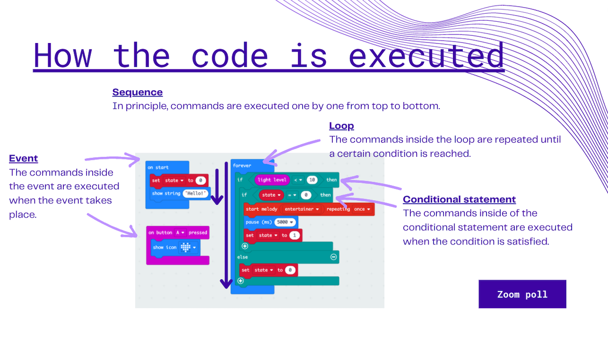After this, I explained terms and rules of programming. These are very abstract and might be challenging for those who just started studying programming. After explaining I used the poll quiz to check how the students understood. They did not answered correctly for some questions. I did not share quiz results because it can disclose who did well and who did not. Instead, I read out loud the quiz questions and options one by one and explained the right answers. In this way, the students can check their understanding again. Using the quiz was very good because I did not expect that they answered incorrectly. I thought the explanation was clear but it wasn’t for them. I used time to explain once more so that they understand the basic terms and rules in programming which are important to proceed. I wanted to get the next slide done but the time came so we ended the session. In the end, I asked if they have any questions or comments. I wanted to know if the pace was too fast or too slow but the student did not mention to it. One student said that the quiz was good idea, which made me happy.
Reflection
The second meet-up session with the students went well. Based on my guiding teacher’s advice after the last session, I tried to speak clearly and concisely without speaking extra stuff, so that I can clearly direct students what to do and where to go. To do that I prepared well beforehand including making the pre-tasks and the quizzes which made me confident and run the session smoothly. I think it was easy for the students to follow what I meant and know the goals to achieve.
The session went mostly as I planned and expected. The number of the students was fewer than I expected but I could adjust the approach during the session so that the session was more suitable for the smaller group. Quiz using the poll worked well for both me and for the students.
One thing I concern was that the student who joined later, he did not participate in most of the time except the last quiz. He was writing in the chat about what they have done in other lectures and relevant tools he has used. I assumed that he was already familiar with the topic and that’s why he did not do the practices for the beginners and just participated in the last quiz. I could have given him some additional tasks so that he can also participate and make good use of the time.
Next time, I will use the poll again. I also want to make the students more active so I want to use online whiteboard and have discussion with them. I will also create some additional tasks for those who are already familiar with the topic.
Meet-up session 03
Date: 31.3.2021
Participants: 3 students, guiding teacher
Contents: radio communication on micro:bit
Learning objectives: 1) Students can describe how variables work in programming contexts, 2) Students can create a simple program using radio communication on micro:bit
Preparation
This is the continues topic from the last meet-up session. In this part, I taught the core of this project, radio communication on micro:bit. Similar to the last session, this part is also knowledge-based rather than practical project work.
I expected that there would be some students who did not participate in the last session, so I instructed the students to watch the recording and check the slides which I put in Teams. I also asked them to do a quiz which summarise the last session (pre-task). I created the quiz in OneNote which is integrated in Teams. I decided to use OneNote because it can be used flexibly allowing us to add text, links, images and videos, as well as drawing with pen. This flexibility would be suitable for the tasks which ask the students to describe or explain something and for the tasks which include collaborative ideation or brainstorming. From practical point of view, it can be integrated in Teams so that the students do not need to go to the new platform. In the quiz, I put three code examples for micro:bit and asked the students to explain what the codes do. In this way, the students can learn programming without creating the code while they are trying to understand the code examples. In OneNote, I added an example answer. By showing some worked example, the students see what is expected.
I created two quizzes using the poll in zoom also for this session. The first quiz was to ask their readiness, such as whether they understood the content of the last session and whether they have done the pre-task, and the second one was to make sure they understand the key content of the session.
Remarks from the session
As I planned, I started with the poll. From the poll, I knew that there were some students who had not attended the last session nor did not have time to watch the recording. Also some of the students had not done the pre-task. So I started the session by going through key contents of the last session so that all the students can participate in this session. I also give some time to take a look at the pre-task. At this point I used more time than I planned so I needed to adjust my teaching.
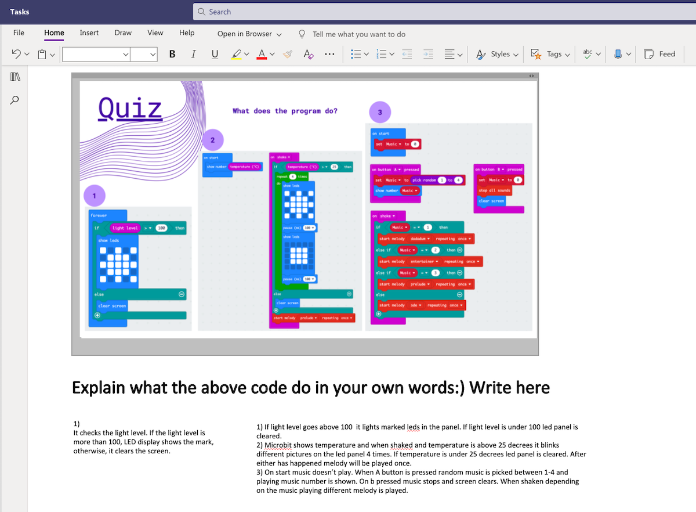After that, I shared my screen and opened the pre-task in OneNote. Before the session, I checked OneNote and noticed that some students had done the task. Most of the answers were correct but one question included a programming concept which I did not explain in the last session (variables) so the students answers were not perfect. Initially I planned to go through the answers together and give feedback to the answers, but because of the need to adjust time, I decided not to thoroughly check the pre-task answers but I explained them by myself. I took this way because I thought it is easier without risks of having unexpected discussions and less time consuming. But after the session, I wondered that whether it was a good idea or not. Because the students who had done the pre-task might feel that their answers were not checked well by the teacher, and the students who had not done the task might not have enough time to understand the task.
I started explaining the variables, which was included in the pre-task. Teaching the concept of programming can be complicated so I used simple examples so that they can understand better. After I explained about the variables, I did the quiz to check how well they understood. There were some incorrect answers so after the quiz, I explained those points again.
Lastly, I started teaching the radio communication on micro:bit. I did not have time to go through all the tutorials I added in the slide so I decided to use the exercise to explain how the radio communication works. The exercise I had prepared was similar to the pre-task, asking what the code example do. I asked to the students their answeres of the exercise, but no one answered so I explained by myself. I could have used the poll here. Then I told that programming exercises can be introduced together with a scenario. One of the main goal of the project is to create a scenario for learning micro:bit. I showed the students how the scenario look like in practice.
Feedback from the guiding teacher
The guiding teacher pointed out that I follow the traditional teaching style even though my role is to facilitate the students’ project work. But he also understood that this kind of teaching (lecturing) is effective when there are concrete contents to teach. My intention of the last session and this session was to give the students basic knowledge of programming and micro:bit which is necessary to work on the project. That’s why the teaching style was traditional. Next session, I will change my style a little bit and play facilitator’ role.
He also suggested to reduce the contents. Too much information can make the students feel overwhelmed. In fact, the students do not have as much experience in programming as I expected. He suggested that I should slow it down and set achievable goal.
Reflection
I would like to improve the interaction with the students by increasing the interactions and their quality. I noticed that some students are hesitant to speak in English. As the language of this course is Finnish, it is the students’ right to learn in Finnish. But my Finnish is not good enough to smoothly communicate with the students and give feedback for them. Language issue is not something I can solve quickly. To make the student learning experience most fruitful by maximise input from the students, I decided to allow them to speak and write in Finnish. I try to understand as much as possible and ask for help from the guiding teacher in interpreting and translating if needed.
Meet-up session 04
Date: 16.4.2021
Participants: 8 students, guiding teacher
Contents: starting the project work
Learning objectives: 1) Students get to know the teammates and start the project work, 2) Students can explain briefly what they are going to do in the project work.
Preparation
This session is going to be a starting point for the actual project work. The students are divided into two teams (content team/ pedagogy team) and going to work on their own topic, which is a part of the same project. I decided the content team’s responsibility as creating scenarios and exercises for the TET students, and pedagogy team’s responsibility as introducing pedagogical scaffolding to support the TET students during the activity. As the starting point of the project work, I prepared the easy open-ended tasks related to each team’s responsibility, which the students can work on based on their experience during this course.
I created a workspace in OneNote which has the section for each team. By using OneNote, the two teams can work on the own task which are automatically shared with the other team. I informed the students about the task before the session so that they can expect what kind of activity they do during the session. I also wrote some example answers of the tasks so that the students can smoothly start working on the task.
Before going to the project work, I wanted to make sure that the students understand each team’s responsibility for the project. So I prepared the poll quiz to check how well the students understand programming on micro:bit.
Remarks from the session
I started the session with the poll quiz about the learning contents of the previous session. Some students did not answered correctly so I explained briefly. Doing the quiz in the beginning was useful because there were more students than previous sessions and some of them were there for the first time. It helped me to interact with the students by giving concrete topics to discuss (from previous experience, I learned that a concrete and clear topic encourages discussion in online environment), and to allowed me to check the students' current understanding and readiness to the project work.
Then I explained that the students should work in a team and introduced each team’s responsibility for the project. I set the breakout rooms for each team and divided the students. I was in one of the breakout room but I did not speak anything. There I found two important things. First, the students were totally stranger to each other because they started with introducing themselves. They have been in the course for a month but all the lectures were organised remotely. So they did not have a chance to meet physically nor collaborate. Second, the students talked much more in Finnish. This proved the discussion with my guiding teacher after the previous session.
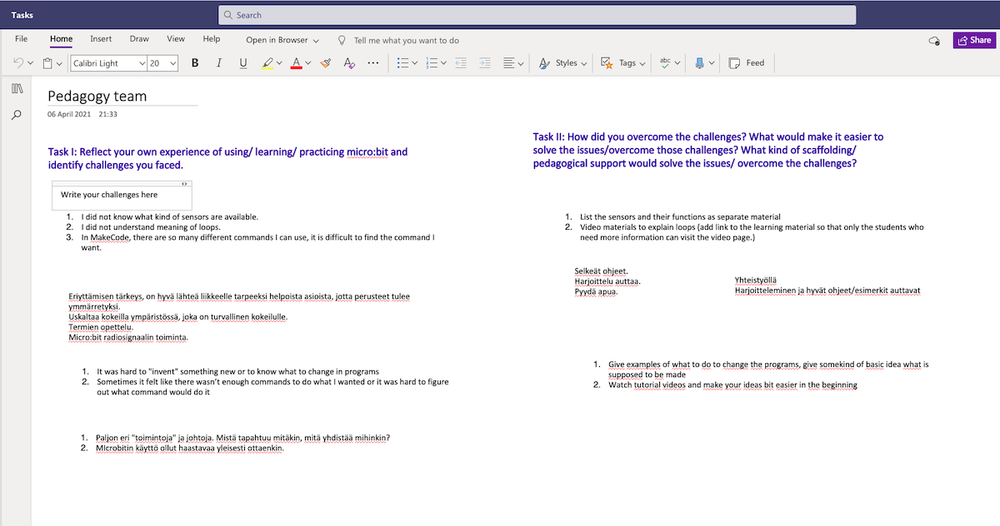I emphasised that the goal of the project is to create learning materials, not to master programming. I explained to the students that they can find examples of programming activity ideas from the internet, but as a teacher they should know how to facilitate the activity and support the students. Some students were worried about their lack of competence in programming, but after the explanation they felt less anxious.
After the breakout room discussion, I gathered all to the main room and asked each team to share what they discussed. Pedagogy team had written already some part of the task while content team had not filled anything yet. Both teams said they were still in the middle of the process, so I asked them to present in the beginning of the next session.
Feedback from the guiding teacher
The guiding teacher advised that I should scaffold the students more if I think they are not proceeding well. He recommended to use “worked example". A worked example is an approach of scaffolding that demonstrates how to perform a task or how to solve a problem (Sweller, 2006). By showing worked example, teacher can support students by reducing cognitive load of the students.
Considering the time limitation of the project and the fact that the relationships among the students have not been developed yet, I decided to structure the project more and give concrete and practical tasks to the students rather than letting them freely explore the ideas and create solutions to the project.
The guiding teacher introduced the idea of laminated card sets. Laminated cards are useful in an activity. The laminated cards can support the students to work on the task independently with minimum facilitation and support from the instructor, as well as give the students the tasks which are best suitable for their level. We had brief discussion of how the laminated card sets look like, such as adding QR code to jump to the support materials and instruction videos.
Another thing my guiding teacher suggested was that I should prepare an alternative assignment for those who cannot participate in the project as a member of the team. Not all the students have participated in my sessions. In this course, there are students with different situation; some of them have work during weekdays. I should consider students’ individual situation and be flexible about the ways to assess them. I sent them email asking to contact me if they need alternative assignment. Four students contacted me that they cannot participate in the team work and need alternative assignment that they can do individually. I suggested multiple options of alternative assignment and let them choose the best suitable one.
Meet-up session 05
Date: 23.4.2021
Participants: 7 students, guiding teacher
Contents: working on the project
Learning objectives: Students start the concrete task for the project
Preparation
I prepared the draft of the laminated cards in Canva that each team can fill. In the draft, I made the rough structure by writing what should be included in each page and by making visual alignment. In the comment section in each page, I added advice and guiding questions to develop the contents. In addition to the Canva draft, I prepared workspace in OneNote. This was because of two reasons. First, I thought that it will become mess if all students tried to edit at the same time. Second I guessed that the students would hesitate to immediately fill in the Canva document shared with others. I wanted to give them some collaborative place that they can throw ideas and discuss. In OneNote, I added all pages I drafted and created the workspace that the students can write their ideas. I also added the questions so that the students can see what they are expected to write. I added some examples of answers to these questions.
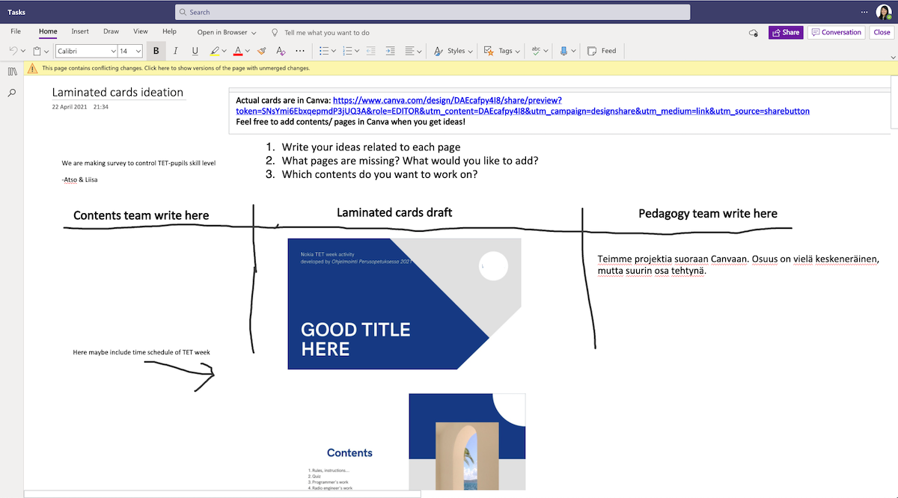Remarks from the session
I started the session with a poll quiz asking their team’s progress and readiness to share the progress. From the results of the poll, I found that the students needed time to share the findings from the last week’s tasks. I assigned them the breakout rooms and let them discuss for 15 minutes.
After that I invited them back to the main room. I shared my own screen and showed the workspace in OneNote where the students wrote their findings of the tasks. I asked the both teams to present their findings.
Here I tried to be supportive for the students. From the past sessions, I know that the students are not fully comfortable in speaking in English, so I said that they can use Finnish if they do not find suitable terms or if they find it more comfortable. This is because I thought that at this stage it is more important to make discussion active and make the students feel involved than force them to use English. The students mainly explained in English but sometimes they used Finnish. Fortunately I understand Finnish in some level (at least what they want to say), and my guiding teacher helped interpreting and translating.
I tried to show recognition of what they have done as much as possible. I picked up some good points the students mentioned and gave encouragement. I quickly checked what the students had written in OneNote beforehand so that I can make assumptions of their thoughts and prepare to give feedback. This was important especially in online environment because I couldn’t be in multiple breakout rooms and couldn’t know whether they had good discussion or not. One team struggled to share the results. I was not sure it was because the language or they did not discuss well because I was not in the breakout room. So I initiated discussion by picking up some ideas they wrote in OneNote and mentioned that the ideas were very good. In this way, I can reduce time of waiting and give the students safe feeling to speak up their ideas.
I also tried to show directions and give resources so that the students can develop the ideas further. For example the students had good idea of the scenario which uses radio communication on micro:bit but they seemed that they were not fully sure how challenging it is and where to start. I introduced the video in YouTube that uses similar idea. The video can help them to get clearer ideas and example projects that they can remix.
I introduced the laminated card idea. I explained carefully so that the students would not feel that they were forced to do the project in the way I want, but showing the right direction and the clear structure would help them to proceed the project. Idea of using laminated cards may be clear but the contents in laminated cards were still vague and such cards can be used for many different ways. To show the right direction, I briefly introduced the example of laminated card sets for a coding club. I went through the draft of the laminated cards I created. Then I introduced workspace in OneNote.
The plan was to give them some time and let them start developing the contents of the laminated cards during the session. But because we took time more than I planned in the beginning, we did not have time for that. I instructed them to meet online and work before the next meet-up session.
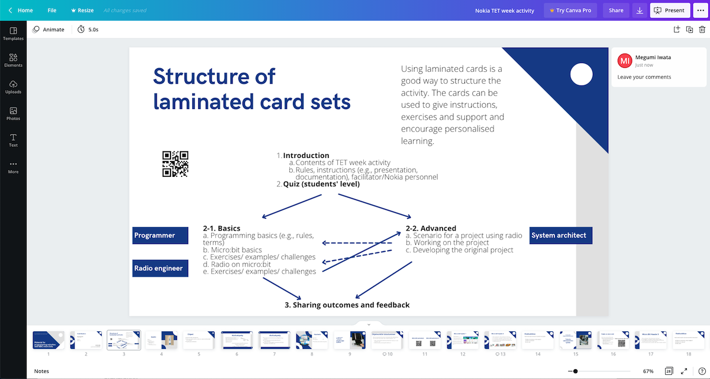Feedback from the guiding teacher
The guiding teacher pointed out that some parts were too theoretical for the students. For example, I introduced some scaffolding theory. I thought that it would help the students’ project. But it was too much information for the students who do not have knowledge and experience in academic educational sciences. Too much information can increase cognitive load and the students may feel overwhelmed. The guiding teacher suggested to use concrete examples when I want to explain theories or information requires high cognitive demand. He advised that not only using worked example by myself in my teaching but also I should try to make the students use it in their work.
Discussion with the client
I had brief discussion with a representative of the client company. I shared the progress and asked him to make sure that they can provide iPads for TET students. To read QR code on the laminated cards, iPads would be useful.
Meet-up session 06
Date: 30.5.2021
Participants: 4 students, guiding teacher, Juha (the tutor at School of Professinal Teacher Education at OAMK)
Contents: rworking on the project
Learning objectives: students develop their work further based on feedback from others
Preparation
Before the session, I checked the draft of the laminated cards in Canva. Both team seemed that they had made progress. I left positive and constructive comments and feedback in Canva. I also prepared some relevant and useful materials and information that I can present to each team.
Remarks from the session
I prepared the poll in the beginning to see the students’ thoughts of their progress. All the students answered that their team made some progress.
After the poll, I asked each team to share the progress of their part. When the teams shared the progress I gave them my feedback and the materials and information I prepared. Those materials and information helped them to develop their work further. Sharing the progress led to good discussion. Because of the division of the responsibilities between the teams, both team needs to include each other’s work to proceed. I am happy to see that the students asked questions to each other so that they can include others’ work in their own work. In addition, one student who chose the alternative individual assignment participated. It was good because her alternative task is also related to the other teams and today they were able to share the progress and make adjustment. I am happy to see the progress of the project work and to see that division of the responsibilities works well.
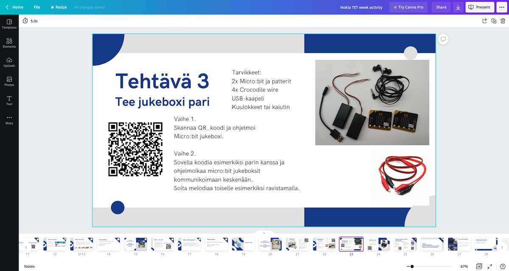About my guidance methods, I tried to explain the idea of scaffolding to the students. This was based on the suggestion from my guiding teacher after the last session. He suggested that not only using scaffolding by myself but also make the students use it in their project work. Explaining the theoretical concepts of scaffolding can be challenging. So I used many concrete examples to explain scaffolding. In the middle my guiding teacher also helped me by explaining to the students in Finnish.
In the end of the lesson, I asked the students if they have any questions. I learned that it is very important to give them opportunity to ask any questions they have. The students may be frustrated by uncertainty and unclear matters. One students asked what happens if the client don’t like our solutions. I assured her by saying that they are doing exactly what the client expect and the quality is higher than their initial expectation. I realised that giving feedback to the students about the overall progress towards the expected goal in the middle is important for the students to reflect and adjust their way of working.
Meet-up session 07
Date: 7.5.2021
Participants: 5 students, guiding teacher
Contents: finishing the project
Learning objectives: students finalise their work and prepare for the presentation
Preparation
Before the session, I checked the students’ work of the laminated cards in Canva. Content team has finished their work. I left positive comments because their work was very high quality and finalised. On the other hand, pedagogy team seemed that they still have to finalise their work. I left some comments and useful tips to help and direct their work. Inn addition, I prepared two slides that briefly introduce the important concept in this context: computational thinking. I tried to make the slides as clear as possible and prepared note for myself so that I can explain better with concrete examples.
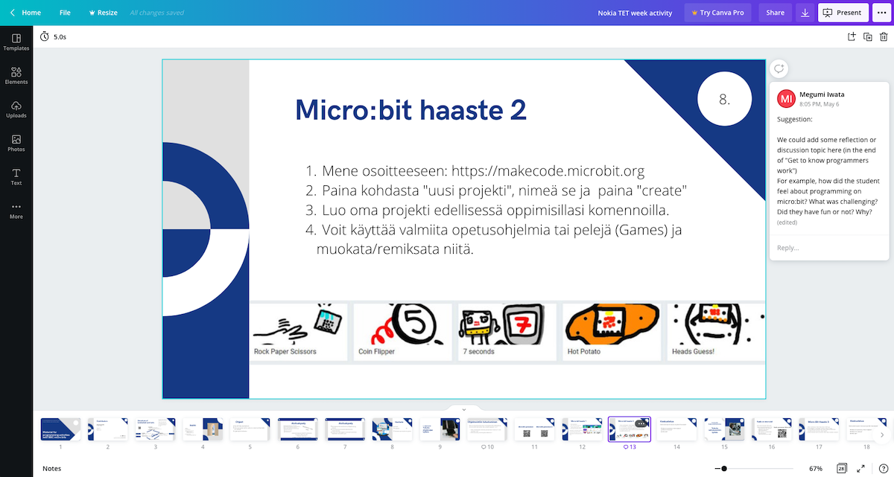Remarks from the session
I started poll quiz asking the progress and readiness for the presentation. After that each team and the students who chose the alternative tasks presented their progress. Especially it was nice that two students who are working on alternative tasks participated in this session and presented their work. The quality of their work was high and other teams’ work has been integrated well. When all the team presented their work, the students saw the connection of their own work to the whole project and might be able to realise how big is the project and that they achieved a big goal together.
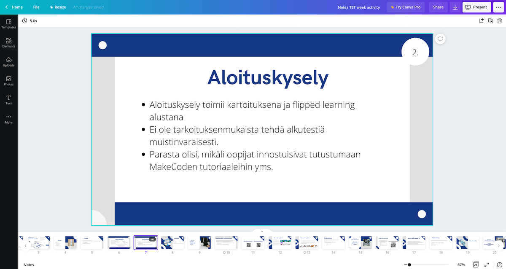In the end of the lesson, I explained computational thinking concepts to the students. Although I prepared well, but I think my explanation was not perfectly clear for those who haven’t heard of computational thinking. It was quite theoretical and detailed.
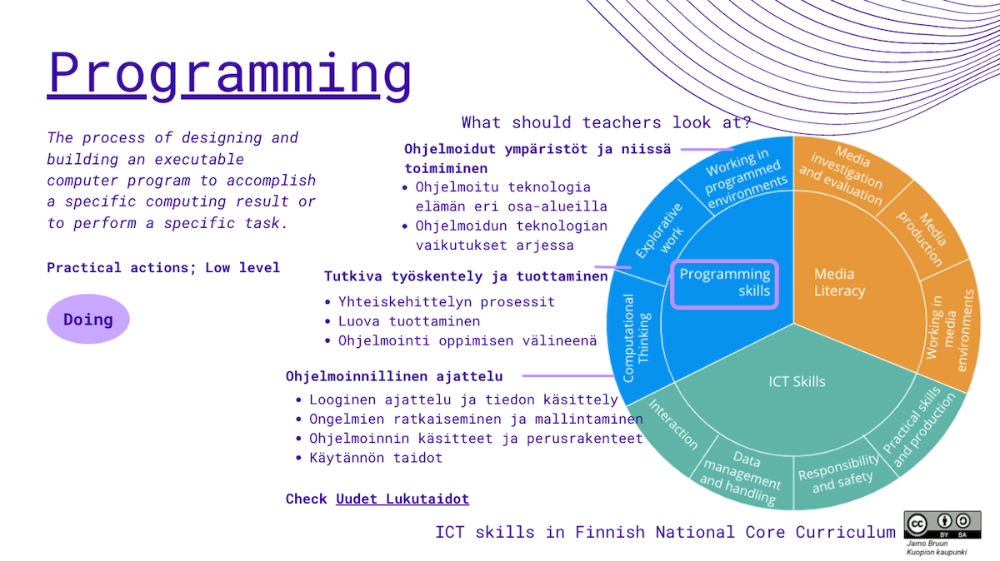Feedback from the guiding teacher
He is satisfied with the results of the project. He recommended me to consider publish the students’ work in open educational resources (AOE) platform with Creative Commons license. I did not know about AOE platform but I thought it is suitable place to publish their work so that not only the client but anyone can see and use the material.
He told me that the last explanation part of computational thinking was very detailed. I realised that I did not need to explain everything but just briefly introduce the idea. The students are practical and they want to know the information which can be used immediately in teaching. I should have considered some quiz or case scenario instead of me speaking. That way, the students learned better because they can relate the concepts with their experience.
Meet-up session 08: Final presentation
Date: 31.3.2021
Participants: 4 students, 3 employees of the client company, guiding teacher, Juha (tutor)
Contents: final presentation
Learning objectives: students present their work to the client company and get feedback
Remarks from the session
The last session was presentation of the students’ work during the past two months. I invited the 3 employees from the client company. My role was to facilitate the presentation and discussion. When the students explained their work, I tried to listen carefully and if there are something to be added, after the presentation I asked them to explain additionally. Overall, the client liked our solutions a lot. They thought that the students have done a great job beyond their expectation. The client agreed to publish the work in AOE so that others can also use.
Feedback from the guiding teacher
I received good feedback from the guiding teacher. He said that I have facilitated and supported the students’ project well and led them to the right direction with high quality concrete outcomes. He thinks that the outcomes of the project was very good so that they should be distributed to the others.
Final reflection
Through the teaching practice I learned that good planning is important for good teaching. By preparing well, I could control my teaching and be able to adjust the contents based on the time and the students level of understanding. By setting the goal for each session, I could give good feedback to the students.
I learned how I can interact better with students. I gave concrete topic to discuss and safe and comfortable environment for discussion. I also used technological tools and pre-tasks to encourage discussion.
I learned how to behave as a teacher. Before, I though I would like to be a teacher who can let the students explore openly. But I realised that I should give clear instructions to tell what I expect so that the students can be explorative. Without such instructions, the students may feel anxious and confused in an open-ended task. This balance was sometimes challenging but I have been improving it.
Overall, I have gained confidence from the teaching practice. I am very happy that I chose this project as the context of my teaching practice. Thank you for the students who participated in my lessons. Thank you for my guiding teacher Jari for supporting me throughout the process. Thank you for my tutors Juha and Kimmo for giving me opportunities to think a model of a good teacher.
References
Krajcik, J. S., & Blumenfeld, P. C. (2006). Project-based learning (pp. 317-34).
Sweller, J. (2006). The worked example effect and human cognition. Learning and instruction.
(Last update: 5.6.2021)